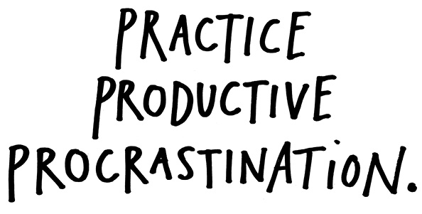
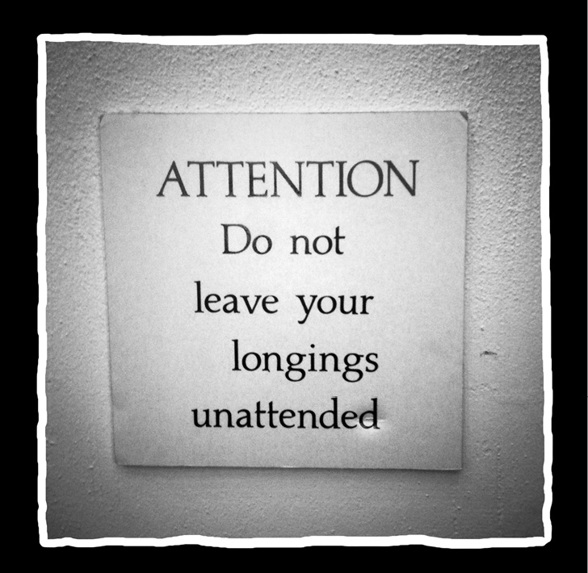

“The work you do while you procrastinate is probably the work you should be doing for the rest of your life.”
—Jessica Hische

One thing I’ve learned in my brief career: It’s the side projects that really take off. By side projects I mean the stuff that you thought was just messing around. Stuff that’s just play. That’s actually the good stuff. That’s when the magic happens.
I think it’s good to have a lot of projects going at once so you can bounce between them. When you get sick of one project, move over to another, and when you’re sick of that one, move back to the project you left. Practice productive procrastination.
Take time to be bored. One time I heard a coworker say, “When I get busy, I get stupid.” Ain’t that the truth. Creative people need time to just sit around and do nothing. I get some of my best ideas when I’m bored, which is why I never take my shirts to the cleaners. I love ironing my shirts—it’s so boring, I almost always get good ideas. If you’re out of ideas, wash the dishes. Take a really long walk. Stare at a spot on the wall for as long as you can. As the artist Maira Kalman says, “Avoiding work is the way to focus my mind.”
Take time to mess around. Get lost. Wander. You never know where it’s going to lead you.
If you have two or three real passions, don’t feel like you have to pick and choose between them. Don’t discard. Keep all your passions in your life. This is something I learned from the playwright Steven Tomlinson.
“You can’t connect the dots looking forward, you can only connect them looking backwards.”
—Steve Jobs

Tomlinson suggests that if you love different things, you just keep spending time with them. “Let them talk to each other. Something will begin to happen.”
The thing is, you can cut off a couple passions and only focus on one, but after a while, you’ll start to feel phantom limb pain.
I spent my teenage years obsessed with songwriting and playing in bands, but then I decided I needed to focus on just writing, so I spent half a decade hardly playing any music at all. The phantom limb pain got worse and worse.
About a year ago I started playing in a band again. Now, I’m starting to feel whole. And the crazy thing is, rather than the music taking away from my writing, I find it interacting with my writing and making it better—I can tell that new synapses in my brain are firing, and new connections are being made. About half the people I work with are musicians (this is not uncommon in Austin, Texas), and they’re not all “creatives,” either—a lot of them are account executives, developers, and the like. However, they’ll all tell you the same thing: Music feeds into their work.
It’s so important to have a hobby. A hobby is something creative that’s just for you. You don’t try to make money or get famous off it, you just do it because it makes you happy. A hobby is something that gives but doesn’t take. While my art is for the world to see, music is only for me and my friends. We get together every Sunday and make noise for a couple of hours. No pressure, no plans. It’s regenerative. It’s like church.
Don’t throw any of yourself away. Don’t worry about a grand scheme or unified vision for your work. Don’t worry about unity—what unifies your work is the fact that you made it. One day, you’ll look back and it will all make sense.